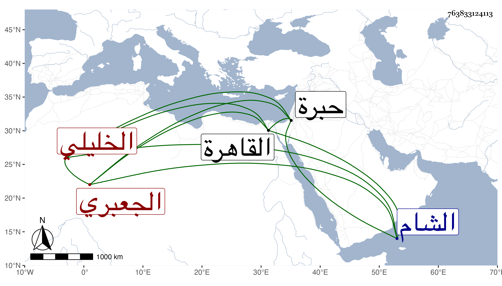

0902Sakhawi.DawLamic.ITO20230111-ara1.EIS1600.763833124113
Biography ID: 763833124113
749
عبد القادر بن عمر بن محمد بن علي بن محمد بن إبراهيم بن عمر بن إبراهيم الجعبري الخليلي الآتي أبوه . ولد في العشر الأخير من ذي القعدة سنة ثمان وعشرين وثمانمائة بالخليل ونشأ بها فحفظ القرآن وأحضر في الأولى مع والده على ابن الجزري والتدمري وعظيمات وكذا على الزين البرشكي ختم الشفا ثم سمع على التدمري المنتقي من مشيخة ابن كليب ومنية السول لابن عبد السلام ، وأجاز له القبابي وشيخنا ، وحج ودخل الشام والقاهرة وحدث فيها سنة تسع وثمانين باليسير
